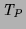
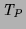
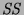

The conventional approach to the semantics of logic programs, described in [LloydLloyd1984], includes model theory, fixpoint theory and an operational semantics. Here we just discuss the theory as it applies to successful computations using definite clauses. That is, we do not (yet) deal with failure or negation, which lead to significant additional complication and various conflicting proposed semantics.
The model theory is two-valued -- each (ground) atom in the Herbrand base is associated with the truth value true or false. Typically the theory represents an interpretation as a single set of atoms -- the atoms which are true. The classical truth tables for conjunction and implication are used. The intended interpretation of a (correct) program is assumed to be a model (every clause instance is true according to the interpretation and truth tables) and this implies soundness of computations (see below). This is the great advantage of the model-theoretic semantics: a program can be viewed completely declaratively and the correctness of each clause can be verified statically and in isolation. It can also be used as the basis for declarative debugging. The intersection of two models is a model, hence a least model exists which is the intersection of all models and is the least Herbrand model. This is the set of logical consequences of the program.
The fixpoint semantics of a program  are based on the
immediate consequence
operator , which maps a set of ground atoms
are based on the
immediate consequence
operator , which maps a set of ground atoms  to the set of ground
atoms which can be proven from
to the set of ground
atoms which can be proven from  by applying a single program clause:
by applying a single program clause:
is a
ground clause instance
and
is monotonic, and applying times starting with the
empty set (
) is of interest. It gives a ``bottom up''
semantics where initially we assume nothing and iteratively prove that a
growing set of atoms are true. The least fixpoint of
is
 (=
).
A set of atoms
(=
).
A set of atoms  is a model of
is a model of  if and only if
and the least fixpoint is the
least model. The fixpoint semantics are particularly useful for
program analysis and have also been used as the basis for bottom up
operational semantics, especially for logic databases.
if and only if
and the least fixpoint is the
least model. The fixpoint semantics are particularly useful for
program analysis and have also been used as the basis for bottom up
operational semantics, especially for logic databases.
The operational model is SLD resolution. This gives a top down semantics where atoms are proved by recursively proving the bodies of matching clauses. The set of ground atoms which have successful SLD derivations (which is the set of ground instances of computed answers) is called the success set, , and is independent of the computation rule (the order in which atoms are selected). The success set is the same as the least model and the least fixpoint. Thus (assuming that the intended interpretation is a model) the computed answers of a program are true in the intended interpretation.